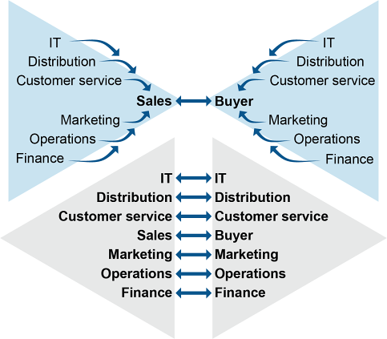
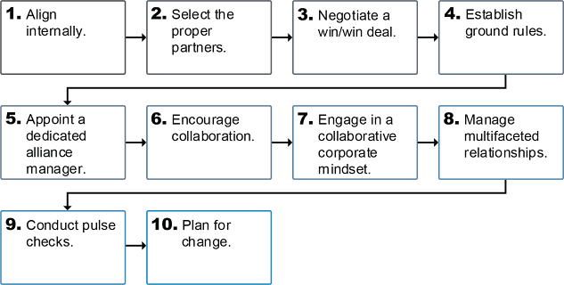

Key distinctions — Strategic Sourcing vs. Traditional Purchasing:
Sourcing strategies:

Nine characteristics of successful alliances (the “8 I’s + Interpersonal”):
Reasons to form alliances: add value, enable strategic growth, increase market access, strengthen operations, increase organizational expertise, build skills, enhance financial strength, better manage risk.
Factors to consider: strategic importance, number of available suppliers, complexity, uncertainty, maturity of relationship.

Click card to flip · Use arrows or shuffle to practise